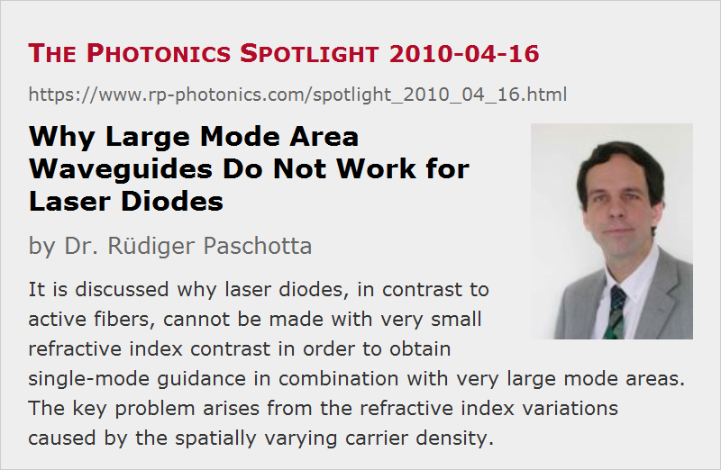

Why Large Mode Area Waveguides Do Not Work for Laser Diodes
Posted on 2010-04-16 as a part of the Photonics Spotlight (available as e-mail newsletter!)
Permanent link: https://www.rp-photonics.com/spotlight_2010_04_16.html
Author: Dr. Rüdiger Paschotta, RP Photonics Consulting GmbH
Abstract: It is discussed why laser diodes, in contrast to active fibers, cannot be made with very small refractive index contrast in order to obtain single-mode guidance in combination with very large mode areas. The key problem arises from the refractive index variations caused by the spatially varying carrier density.
Ref.: encyclopedia articles on laser diodes, diode bars, large mode area fibers, beam quality

For high-power fiber lasers, it has become the usual practice to employ large mode area fibers with single-mode guidance in order to obtain a high beam quality. Essentially, one makes a fiber with a low numerical aperture (NA) such that single-mode guidance is obtained despite the large mode area. This raises the question why one does not employ that technique to high-power laser diodes such as diode bars. Couldn't one make semiconductor structures with low refractive index contrast, such that single-mode guidance is obtained even for a broad stripe?
At a first glance, one may think that the asymmetry between vertical and horizontal direction is the problem: we need a high NA for the vertical direction, where the waveguide extension is small, and a much smaller NA for the horizontal direction. This could be done, however. The real problem is that low-NA waveguides, having a low refractive index contrast, can only work when the refractive index can be controlled with high precision. This turns out to be not simply an issue of precise semiconductor growth: the refractive index depends not only on the exact material composition (which is subject to some errors, particularly in ternary and quaternary compounds), but also on the carrier density. As the optical intensity would exhibit significant longitudinal and transverse variations in a single-mode laser, there would also be a refractive index variation, which would affect the waveguiding substantially. For such reasons, even a laser diode fabricated with perfectly accurate semiconductor growth methods could not work with a very small index contrast. Therefore, we are forced to use multimode waveguides, and it becomes difficult to enforce single-mode operation under such circumstances.
But why do we then not have such problems in the context of rare-earth-doped fibers? After all, these gain media also exhibit some dependence of the refractive index on the degree of excitation of laser-active ions, and we also have significant longitudinal transverse variations of the excitation density. A big difference, however, is that the gain per unit length is much smaller than in a laser diode, so that the corresponding refractive index differences are much smaller and thus have a much weaker influence on the waveguiding properties. Unfortunately, we can not use this insight for modifying laser diodes correspondingly: it would not be desirable to strongly reduce the gain per unit length in that case, not only because we don't like to have very long laser diodes, but also because a high power conversion efficiency requires the operation with a substantial carrier density.
We see that interestingly the limitations of such different laser technologies are very different, and that their understanding requires the consideration of a wide range of aspects.
This article is a posting of the Photonics Spotlight, authored by Dr. Rüdiger Paschotta. You may link to this page and cite it, because its location is permanent. See also the RP Photonics Encyclopedia.
Note that you can also receive the articles in the form of a newsletter or with an RSS feed.
Questions and Comments from Users
Here you can submit questions and comments. As far as they get accepted by the author, they will appear above this paragraph together with the author’s answer. The author will decide on acceptance based on certain criteria. Essentially, the issue must be of sufficiently broad interest.
Please do not enter personal data here; we would otherwise delete it soon. (See also our privacy declaration.) If you wish to receive personal feedback or consultancy from the author, please contact him e.g. via e-mail.
By submitting the information, you give your consent to the potential publication of your inputs on our website according to our rules. (If you later retract your consent, we will delete those inputs.) As your inputs are first reviewed by the author, they may be published with some delay.
|  |
If you like this page, please share the link with your friends and colleagues, e.g. via social media:
These sharing buttons are implemented in a privacy-friendly way!